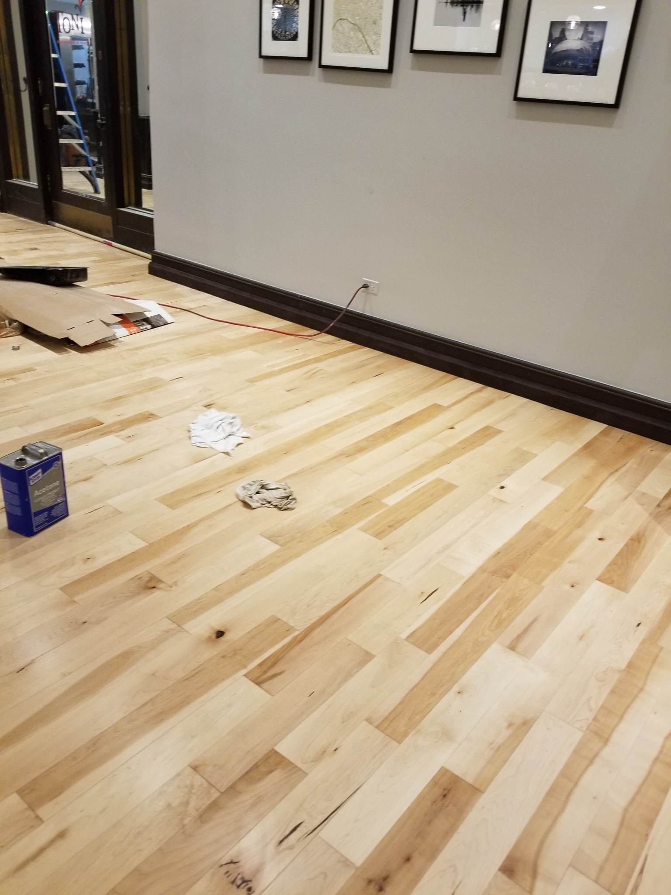
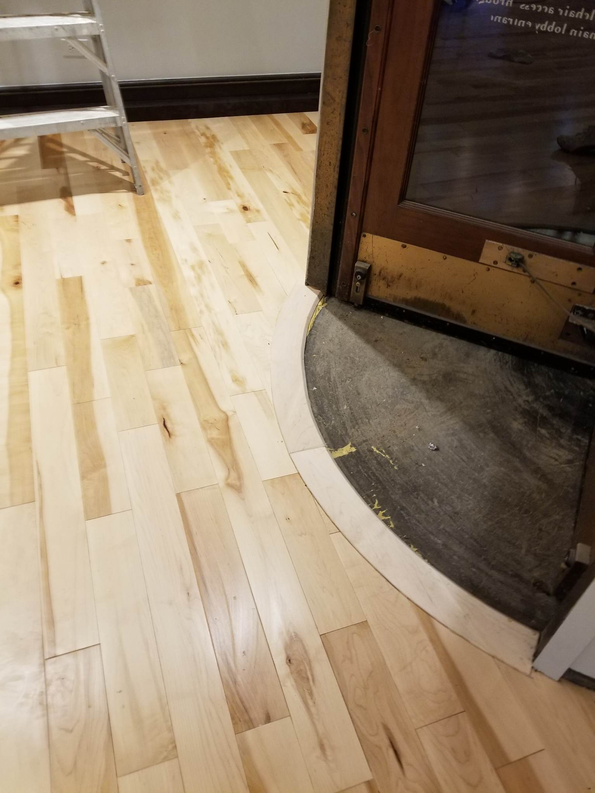

Refinishing Floors and Stairs
Home Page
Refinishing is a process where floor that has been either sanded or treated, or just sanded, is coated with stain. This is usually the final step of the process because once a floor is stained the floor is completed and it will be ready to walk on once it dries. Event puts unparalled effort into all of the steps of creating a floor the customer has requested.

